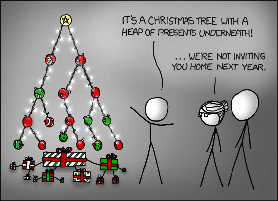

演算法＋圖論
2014/12/28 陳伯恩
http://betaveros.github.io/2014-algo/graph.html
(created with reveal.js-2.6.2)
先宣傳一下
2015 程式解題競賽集訓營
謀事在人，程式在天 (ioicamp.csie.org)
開放討論
Graph 圖
![[A graph with 6 vertices and 7 edges]](graph6.png)
Graph 圖
G = (V, E)
就是一堆（頂）點，跟一堆邊。
每條邊連接兩個點。
方向（即一個A到B的邊跟一個B到A的邊一不一樣）有時候重要，有時候不重要。重要的時候，是有向圖；不重要的時候，是無向圖
如何儲存？
幾乎所有時候，頂點會用數字標記。
vector<pair<int,int> >？
set<pair<int,int> >？
邊也會有性質（權重、長度、價格、價值，分數⋯⋯）
應該先問，我們可能會如何使用儲存的圖？
- 詢問一個點有邊到那些其他點（＋那些邊的性質）
- 詢問兩個點之間有沒有邊（＋那些邊的性質）
最常用的方法 (Adjacency List)
vector<int> graph[500008];
graph[i]包含所有從頂點i出發的邊到另外哪一個頂點
如果邊上還要儲存其他資訊，可以用：
struct Edge { int to; int dist; };
vector<Edge> graph[500008];
// ...
scanf("%d%d%d", &a, &b, &d);
graph[a].push_back(Edge { .to = b, .dist = d });
// ...
vector
復習／細講
vector<int> vec;
// ^ template
vec[0] = 1337;
printf("%d", vec[0]);
vec.push_back(1337);
int x = vec.back();
vec.pop_back();
vec.size(); // warning: size_t is unsigned
vec.empty(); // bool
另外
Adjacency Matrix
點很少／邊很多／需要計算每兩個點之間的東西（All-Pairs Shortest Paths）的話：
const int OO = 2000 << 20;
int dist[1008][1008];
for (int i = 0; i < 1008; i++)
for (int j = 0; j < 1008; j++)
dist[i][j] = OO;
// ...
scanf("%d%d%d", &a, &b, &d);
dist[a][b] = min(dist[a][b], d);
// ...
最後
vector<Edge>也是有用的（Kruskal）
例子
因為我不會找題目，所以一半是靠CodeForces的tag，一半是靠
ack graph --cpp --files-with-matches | xargs mvim
一起做一個例子吧：CF R181 D2 pB. Coach
Depth-First Search (DFS)
最輕鬆但也最重要的演算法。看到節點就走下去遞迴。
DFS Visualization只需要記錄一個bool陣列（而且如果是Tree的話連這個都不用）。
bool vis[500008];
void dfs(int v) {
if (vis[v]) return;
vis[v] = true;
for (int w : graph[v]) dfs(w);
}
（＊除非遞迴太深，要「手爆stack」）
Grid
就算題目不直接給你一堆點跟一堆邊，還是有很多題目有「隱形」的圖，可以在上面DFS。好像棋盤似的圖特別多
⋯⋯但絕對不是唯一一種「隱形」的圖
這裡用的演算法還沒講到；請先確切了解這些題目裡的「Graph」
例子
思考題，不太需要圖論演算法：
比較有演算法的題目：
Tree
Tree
一種超級重要的graph
- n個點，n − 1條邊
- 連通
- 沒有圈
Not Tree
（有人叫n個點，n條邊＋連通（＋恰一個圈）的圖「水母」）
CF β R80 pB. Cthulhu CF β R95 D2 pD. SubwayTree 性質
題目常見的一種tree表示法是給你n − 1個數字，0 ≤ ai < i，ai表示節點i連到ai。這樣也很自然的出現root，就是節點0。
- ✓ CF β R87 pA. Party
- CF β R94 pB. Students and Shoelaces
- GCJ 2014 R1A pB. Full Binary Tree
- TIOJ 1106. 遇見一株樹
- TIOJ 1108. 樹的三兄弟 (preorder, inorder → postorder)
Breadth-First Search (BFS)
DFS = 看到新的節點，馬上走；較晚看到的節點優先
BFS = 看到新的節點「預留」；較早看到的節點優先
bool vis[500008];
deque<int> q;
void bfs(int v0) {
vis[v0] = true;
q.push_back(v0);
while (!q.empty()) {
int v = q.front();
q.pop_front();
for (int w : graph[v]) {
if (!vis[w]) {
vis[w] = true;
q.push_back(w);
} } } }
注意push_back、pop_front。如果兩者改成deque的同一個方向就變回DFS了。
看看之前的例子能不能解決吧。
其他Search
A*
IDDFS
...
Disjoint-Set Union
雖然這應該是資料結構課講的東西，不過應該也有圖論的味道，而且也常常在圖論上用到。
Disjoint-Set Union
有n個東西，一開始形成n堆，每次會合併兩堆東西或詢問一個東西在「哪一堆」／兩個東西是不是在同一堆。
Disjoint-Set Union
int parent[50008], n;
void init() {
for (int i = 0; i < n; i++) parent[i] = i;
}
int root(int v) {
if (v == parent[v]) return v;
return root(parent[v]);
}
void join(int a, int b) {
int ra = root(a);
int rb = root(b);
if (ra != rb) parent[ra] = rb;
}
Disjoint-Set Union
int parent[50008], n;
void init() {
for (int i = 0; i < n; i++) parent[i] = i;
}
int root(int v) {
if (v == parent[v]) return v;
return parent[v] = root(parent[v]); // Path Compression
}
void join(int a, int b) {
int ra = root(a);
int rb = root(b);
if (ra != rb) parent[ra] = rb;
}
Topological Sort 拓撲排序
HOJ 開心提供了：HOJ 141. 海綿寶寶之製作蟹堡(拓撲排序)
每次拔掉一個in-degree = 0的節點罷了
Single-Source Shortest Path
✓ 經典在HOJ 138. 海綿寶寶之我要吃美味蟹堡(最短路)
CF R257 D1 pB. Jzzhu and Cities
CF R125 D1 pB. Jumping on Walls是一個隱形graph的例子
Dijkstra
（超難念）
O(E + V log V)，算出從一個頂點到其他所有點的最短距離。
dist[i]記錄「目前知道」從起點到每個頂點i的最短距離。有些節點的最短距離是「確定」的，有些節點的最短距離是「暫定」的。
每次看「暫定」的最短距離中最短一個，把它變成「確定」的（為什麼？），然後看看那個節點出去的邊能不能縮短任何其他暫定的最短距離。
全部的距離都確定之後就大工告成了。
for (int i = 1; i <= n; i++) dist[i] = OO;
dist[start] = 0;
int cur = start;
while (cur != -1) {
vis[cur] = true;
for (Edge & e : graph[cur]) {
dist[e.to] = min(dist[e.to], dist[cur] + e.dist);
}
cur = -1; int md = OO;
for (int i = 1; i <= n; i++) {
if (!vis[i] && dist[i] < md) {
cur = i;
md = dist[i];
}
}
}
說好的O(E + V log V)呢？
for (int i = 1; i <= n; i++) dist[i] = OO;
dist[start] = 0;
update(start);
while (!done()) {
int cur = nextVertex(); // ???
vis[cur] = true;
for (Edge & e : graph[cur]) {
dist[e.to] = min(dist[e.to], dist[cur] + e.dist);
update(e.to);
}
}
可以用set假裝，也可以自己寫一個binary heap，不過其實很多時候是不需要的，O(V2)也會過。
另外，可以研究SPFA
All-Pairs Shortest Path
沒有在喜歡的OJ上找到經典題qq
Floyd-Warshall
O(V3)
for (int i = 1; i < n; i++)
for (int j = 1; j < n; j++)
for (int k = 1; k < n; k++)
dist[j][k] = min(dist[j][k], dist[j][i] + dist[i][k]);
注意for的順序！「過渡點」i必須在最外層。
可以用DP的角度想；i經過1到k的時候，dist[j][k]是什麼意思？
Minimum Spanning Tree 最小生成樹
HOJ又提供了～ HOJ 140. 海綿寶寶之偷賣美味蟹堡(最小生成樹)
Kruskal
greedy貪心的一直拿最短的邊。
不過不是所有短邊都有用。要如何維護？
Disjoint-Set Union!
Kruskal
struct Edge {
int v1, v2, dist;
bool operator<(const Edge & o) {
return dist < o.dist;
}
};
vector<Edge> edges;
// ... read edges ...
void kruskal() {
sort(edges.begin(), edges.end());
for (Edge & e : edges) {
if (root(e.v1) != root(e.v2)) {
// ... use edge e ...
join(e.v1, e.v2);
}
}
}
etc（略提）
圖論還有很多很多經典題目／演算法
Bridge, Articulation Point
HOJ
SCC
Strongly Connected Component
Flow
Edmonds-Karp; Dinic (Blocking Flow)